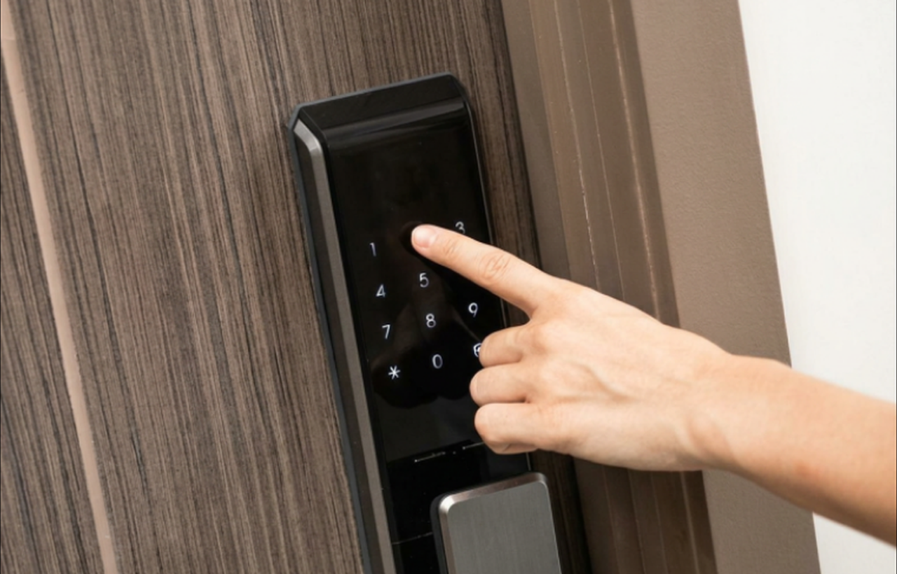

Get Locksmith Jobs That Are Already Booked - Never Shared
TradeWorks Select sends vetted pros confirmed work orders customers already booked, not shared leads. You stay the only pro on the job, keep 100% of the invoice, and see your ZIP pricing before you apply.
Confirmed work orders
One pro per order
Keep 100% of invoice

Work Orders, Not Leads
The locksmith lead space is notoriously bad - lead platforms and ad networks are full of anonymous listings and scam operators, and they sell the same customer's call to several locksmiths who then race to the phone. You pay whether or not the person ever books. TradeWorks Select works the opposite way, and being a vetted, bonded member is exactly how honest locksmiths stand apart from that mess.
Every job in your queue is a confirmed work order: a real homeowner or property manager who booked actual work - a lockout, a rekey, a lock install - from a locksmith they can see is vetted. You are not buying a chance at a maybe. You are receiving a booked job from someone who has already chosen to trust you.
Three pillars:
Locksmith work TradeWorks can route
These service lines come from the industry guide and match the TradeWorks taxonomy for contractor-facing routing.
Lock Install & Repair
Route this work with clear intake, service context, and contractor-ready expectations before the request reaches your team.
Rekeying
Route this work with clear intake, service context, and contractor-ready expectations before the request reaches your team.
Lockout Service
Route this work with clear intake, service context, and contractor-ready expectations before the request reaches your team.
Smart Lock Installation
Route this work with clear intake, service context, and contractor-ready expectations before the request reaches your team.
See your Locksmith market by ZIP
Enter your ZIP to check market availability and membership pricing.
What a confirmed Locksmith work order looks like
"Confirmed work order" is not marketing language - it is a specific thing. Here are two, since the trade runs on both urgent calls and planned jobs.
First, a lockout. A resident in your ZIP is locked out of her home in the evening. She opens the marketplace, filters to Locksmith, sees your company - bonded, background-checked, 4.9 rating - and books an urgent lockout. The order lands in your queue with the address and time. You head over, verify she's the resident before you do anything, get her back in, and invoice her directly. That's an urgent Rate Card job - booked, verified, done.
Second, a rekey. A family that just bought a home wants every lock rekeyed, because they don't know who still has old keys. They book a rekey with you on the marketplace at your posted rate. You rekey all the exterior doors to a single key and invoice directly.
Two demand sources, one membership
Your single locksmith membership is fed by two different kinds of customer, and the second one is a steady stream of recurring rekey work.
Homeowners - The classic residential mix - home lockouts around the clock, rekeys after a move or a lost key, lock installation and repair, deadbolt and hardware upgrades, and smart-lock installs. Homeowners choose a locksmith on trust above all, especially when they're locked out and vulnerable. They find you through the marketplace, see that you're bonded and vetted, and book real work.
Property managers & commercial - This is the volume most lead platforms cannot give you, and for locksmiths it is a perfect recurring fit: rental-turnover rekeys. Every time a tenant moves out, the property manager needs the locks rekeyed before the next one moves in - steady, repeatable work across a whole portfolio. Add commercial master-key systems, access-control hardware, and business lockouts, all booked against written service levels (routine within 48 hours, urgent within 24, emergency within 4). A property manager with dozens of doors can be a dependable source of rekeys all year.
1Homeowner or property manager books a service.
2The order arrives with scope, schedule, and access notes.
3You run the job and invoice directly.
4Your team keeps the relationship clean and documented.
Grow your own brand, too
Confirmed work orders fill your calendar; your own brand is what compounds. The same team behind TradeWorks Select runs AI-enhanced digital marketing, 24/7 AI booking, and CRM setup for locksmiths across the United States and Canada - so the lockout or rekey call your marketing generates gets answered and booked instead of going to a competitor's voicemail, and the whole operation is measured in booked jobs, not clicks.
Everything below is a la carte, priced individually from $20/month, with no long-term contracts. Run it alongside your Select membership or on its own.
Three layers of search
When someone is locked out or needs a rekey, they search on their phone and call the first locksmith who looks legitimate and picks up - and three layers now sit above the first organic link. Most agencies still optimize only the last one, and lose an urgent, high-intent call before your website ever loads.
1 - Local Services Ads - Top of page, pay-per-lead, Google Guaranteed badge. We run verification end to end, bid by season and time of day, and dispute non-qualified leads for you.
Marketing service stack
A la carte, no bundles, no long-term contracts. Local SEO, Google Business Profile management, paid search, reputation, content, and AI search visibility are organized around booked jobs, not vanity traffic.
Be found, be trusted, and convert more high-intent searches into scheduled work.
AI call answering
Answers in under three rings, 24/7 - because a locked-out customer calls the next locksmith if you don't pick up, and it books urgent lockouts and planned rekeys straight onto your calendar. Onto your calendar or CRM. Starter from $10/month; Professional around $40/month plus one-time setup.
CRM and field service setup
We configure pipelines, intake fields, automations, calendars, reminders, and reporting around the way your trade actually sells and delivers work.
Your team gets cleaner handoffs, better follow-up, and a system that shows what happened from first call to booked job.
We report numbers, not adjectives
Every engagement gets a live dashboard and a monthly report on calls answered, leads captured, booked jobs, and local visibility. Verified client results appear only after they clear the verification bar.
Calls answeredLeads capturedBooked jobsLocal Pack rank
Locksmith contractor questions
How do locksmiths get work orders through TradeWorks Select?
Apply once and get vetted. After approval, homeowners and property managers in your ZIP browse the network, see that you're bonded and background-checked, and book on your calendar - including urgent lockouts. The order arrives confirmed; standard jobs are booked at your posted rate, and master-key and commercial work comes in for a quote.
How much does a TradeWorks Select locksmith membership cost?
One flat monthly membership, priced to your ZIP's market. Across locksmithing in Florida the median is around $80 per month, but your exact figure depends on your ZIP - enter it in the lookup on this page. There are no per-job fees, no percentages, and no cost when a job cancels. It is introductory launch pricing and early members lock in their rate.
Do you handle emergency lockouts?
Yes - lockouts are a core part of the trade, and homeowners book urgent lockout jobs through the marketplace and can see the locksmith is on the way. For everyone's protection, members verify the customer is the resident or owner before granting access.
Is this a locksmith lead generation service?
No. Lead services and ad networks sell the same call to several locksmiths - and the space is full of scam listings. Select sends confirmed work orders from customers who chose your bonded, vetted company, never a shared lead.
What's the best Thumbtack, Angi, or HomeAdvisor alternative for locksmiths?
TradeWorks Select. Those platforms charge per shared lead whether or not it converts, and you compete against scam operators. Select charges one flat membership, every order is a real booked job from a customer who chose your vetted company, and you keep 100% of the invoice. A cancelled order costs you nothing extra.
How can I get locksmith jobs without buying shared leads?
Join a vetted, bonded network that sends confirmed work instead of selling contact information five ways. With TradeWorks Select, homeowners and property managers book real jobs with your bonded company through the marketplace - no per-lead fees, no bidding war, and one flat monthly membership as your only cost.
Do I need a license to join?
Florida has no statewide locksmith license, so we verify your bonding, insurance, and background checks, plus local licensing where a county or city requires it. Being bonded and background-checked is exactly what makes the network trustworthy in a trade built on access.
How many locksmiths do you accept per ZIP code?
Seats per ZIP are deliberately limited to protect work-order volume and recurring rekey relationships for the members already in the network. The exact number a ZIP supports is shown in the lookup on this page. Once a ZIP is full, applications close until a seat opens.
Locksmith marketing questions
How much does locksmith marketing cost with TradeWorks AI?
Services are priced individually from $20/month - Local SEO, GBP management, GEO/AEO, content, and reputation are $20/mo each; LSA and Google Ads management are 15% of spend with a $50/mo minimum; AI booking starts at $10/mo. No long-term contracts.
What's the fastest way for a locksmith to get more jobs?
Instant call handling plus a credible, review-rich Google Business Profile - locked-out customers call the next locksmith if you don't pick up, and in a scam-wary market reviews and visible credentials win the job. The Google Guaranteed badge from Local Services Ads helps even more.
Do you handle Google Guaranteed verification?
Yes - and it matters more for locksmiths than almost anyone, because it's the trust badge that separates you from scam listings. We manage background check and license and insurance verification start to finish, then ongoing bid management and dispute handling.
Can you help us win property-manager rekey work?
Yes - rental-turnover rekeys are steady, repeatable revenue, so we build content, local visibility, and outreach positioning aimed at property managers and landlords, not just one-off lockouts.
Do you only work with locksmiths in Florida?
No - our marketing, AI agents, and consulting serve locksmiths across the United States and Canada. (TradeWorks Select, our booking network, is live in the Tampa Bay area and expanding metro by metro.)
How the work order moves
Every Locksmith order is organized as a trackable job, not a loose contact record.
What TradeWorks can show before dispatch
The page, intake, and booking flow should make the next action obvious for both the customer and your office.
Lock Install & Repair
Customer intent, service notes, schedule window, and booking context are captured before dispatch.Rekeying
Customer intent, service notes, schedule window, and booking context are captured before dispatch.Lockout Service
Customer intent, service notes, schedule window, and booking context are captured before dispatch.Smart Lock Installation
Customer intent, service notes, schedule window, and booking context are captured before dispatch.Marketing services for Locksmith contractors
Each channel is built around booked jobs, call quality, and local visibility instead of vanity traffic.
Map Pack visibility
Google Business Profile optimization, review prompts, categories, service areas, and local posts.Ads and LSA
Spend-aware campaign management, lead dispute support, and service-area tuning.SEO and AI search
Pages structured for traditional search, AI answers, and service-intent questions.AI call intake
Answer after-hours calls, qualify the job, capture urgency, and push the next step into your workflow.CRM and dispatch setup
Route service records, follow-ups, reminders, and customer history into the system your team actually uses.Demand planning by season
TradeWorks uses market demand, service urgency, and local search behavior to help Locksmith contractors plan work volume more clearly.
Peak seasonProtect fast booking and high-intent calls
Shoulder seasonPush maintenance, inspections, and repeat work
Slow seasonBuild reviews, content, and retargeting audiences
Service lineSearch intentPage support
Lock Install & RepairLock Install & Repair near meBooking page, FAQ, review prompt, and ZIP landing page.
RekeyingRekeying near meBooking page, FAQ, review prompt, and ZIP landing page.
Lockout ServiceLockout Service near meBooking page, FAQ, review prompt, and ZIP landing page.
Smart Lock InstallationSmart Lock Installation near meBooking page, FAQ, review prompt, and ZIP landing page.
Proof that is easy to inspect
Reports should make booked demand, response quality, and local visibility clear without needing a marketing translation layer.
Booked workZIP coverageResponse speedLocal rank
Sample 30-day growth plan
A practical first month for a Locksmith contractor starts with conversion basics, then builds the traffic layer.
- Confirm ZIP coverage, licensing proof, service categories, and booking rules.
- Clean up the Google profile, service pages, tracking numbers, and intake scripts.
- Launch the first high-intent campaign and route every qualified call into the same booking workflow.
- Report booked jobs, missed calls, reviews, and ranking movement before adding the next channel.
Content that supports the sale
Industry pages should connect contractor growth with customer education, so every service category has useful next-step content.
Two ways to grow your Locksmith business
Receive confirmed work orders from the network, market your own brand, or do both.